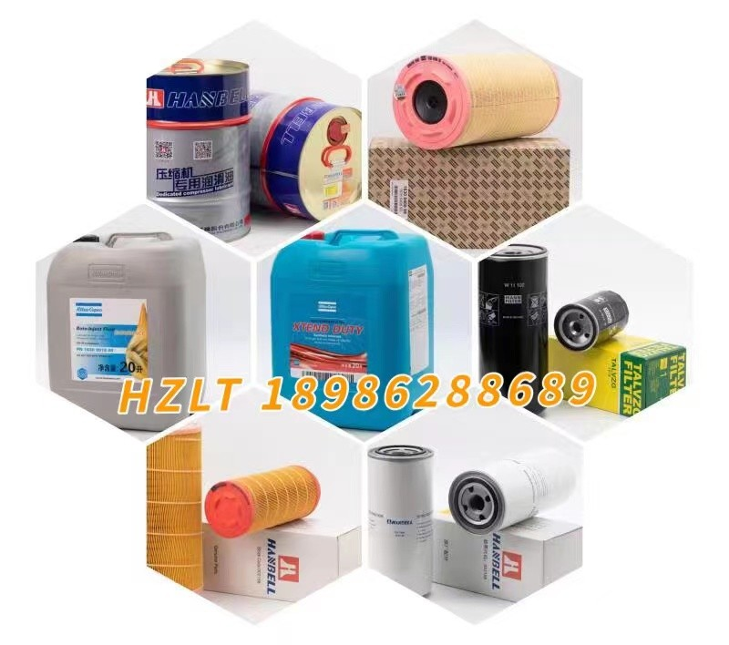

空压机油耗大，别只怪油分
2022-07-18
阅读次数：202
一般来说，跑油跟以下几方面因素息息相关：油分故障、压缩机系统故障、油分安装不当、油气分离系统设计有缺陷等。
湖北汉钟告诉您若压缩机出现跑油，除了会污染后处理设备，如干燥机和精密滤芯，还会影响产品质量，导致某些生产设备不同程度的损坏。所以，我们有必要掌握螺杆压缩机油耗大的原因及处理方法。

汉钟干式无油双级压缩机
油耗大故障原因油分故障
喷油螺杆压缩机中，在压缩气体的同时，大量的油被喷入压缩机的齿间容积。这些油和被压缩气体形成的油气混合物，在经历相同的压缩过程后，被排到机组的油气分离器中。油气分离器是喷油螺杆压缩机组系统中的主要设备之一。为了降低机组排气中的含油量和循环使用机组中的润滑油，必须利用油气分离器把润滑油有效地从气体中分离出来。如果油分出现故障，润滑油就不能很好地被分离，将会使润滑油随同压缩空气被排放出去。因此，油分及其油分芯故障是喷油螺杆压缩机油耗大故障的最主要因素。
一般来说，用于喷油螺杆式压缩机的油分要求是，经过油分处理后的出口压缩空气残油量不大于3ppm。压缩机出口空气含油量超标通常称之为耗油量大，又称跑油，是长久以来一直困扰着厂家、销售商及用户的头痛问题。

湖北汉钟告诉您：引起压缩机油分故障主要有以下原因和危害
1．油分芯堵塞
油分芯堵塞时会引起空压机电机电流过大。也有可能会因为过高的压力使得油分芯变形，轻则电机过载严重时会使主机抱死。另外，电流过大会使接触器寿命缩短或者触点烧死引发重大事故。一般螺杆空压机会有滤芯前压力表，当滤芯前压力表和供气压力表之间的压差达到0.08MPa时需对油分芯进行更换。
2．油分芯破损
当油分芯破损时会出现空压机耗油非常严重，而且在储气罐和管路中会有大量的油分。严重时，在储气罐排污阀排放时会直接排出空压机油。
引起此故障的原因主要有：
（1）没有按时对油分芯进行更换；
（2）选用了质量较差的油分芯；
（3）安装过程中没有按规程操作，如安装回油管时将油分芯插破等。
3．油分芯烧毁
油分芯的烧毁情况在空压机运转过程中并不常见但也偶有发生。主要表现为油分芯的过滤网局部或全部被碳化，甚至油分芯金属外壳都被烧化。
湖北汉钟告诉您发生此类故障主要是因为：
（1）空压机油的品质较差；
（2）油分芯的本身质量太差；
（3）安装油分芯时油分芯外壳和油分桶之间没有可靠连接无法接地，在有静电时导致油雾被点燃从而烧毁油分芯。
4．油分芯分离效果较差
主要表现为压缩空气含油量太大，对后处理设备和用户设备造成损坏。
湖北汉钟告诉您此故障的原因主要是因为：
（1）油分芯的本身质量太差；
（2）安装时没有按规程操作。
其他原因
在实际的处理过程中，我们发现，还有很大一部分的故障投诉并非油分的质量问题造成的。那么，除了油分质量问题以外，湖北汉钟告诉您实际这几种情况同样会导致油分跑油：
1、最小压力阀故障
最小压力阀是维持螺杆压缩机系统压力的一个部件，若最小压力阀的密封处有泄漏点或最小压力阀提前开启，那么机器在运行初期建立油气罐压力时间就会增长，此时处于低压状态的气体油雾浓度高，通过油分时流速快，油分负荷加重，分离效果降低，导致耗油量大。
2、使用了不合格的压缩机润滑油
目前通用的螺杆压缩机都有高温保护，其通常跳机温度为110～120℃左右，而有些压缩机使用了不合格的润滑油，在排气温度高时就会出现不同程度的耗油现象（基于此，温度越高，耗油量越大）。其原因是高温时经过油气桶初级分离后有部分机油微滴可与气相分子具有相同的数量级，分子直径≤0.01μm，油分难以将其捕捉分离，导致耗油量过高。
解决方法：查找引起高温的原因，解决问题降低温度，尽可能的选用质量好的螺杆压缩机润滑油。
3、油气分离罐设计不规范
有部分压缩机厂商，在设计油气分离罐时，初级分离系统设计不合理，初级分离效果不理想，使进油分前的油雾浓度含量很高，油分负荷过重，处理能力不足，导致油耗过高。
解决方法：生产厂家改进设计，提高初级分离的效果。
4、加油过多
加油量超过正常油位，部分机油随气流带走，导致耗油量过大。
解决方法：停机后，待油气桶内气压泄放为零后，开启放油阀，将油排放至正常油位即可。
5、回油单向阀损坏
若回油单向阀损坏（由单向通变成双向通），停机后油分罐内压则会将大量的机油通过回油管倒回油分内部，下次机器运行时，油分内部的机油将无法及时吸回机头，导致部分的机油随着分离后的空气跑到压缩机外（此种情况常见于未装置油路截止阀和机头排气出口单向阀的机器）。
解决方法：拆下后检查单向阀，如有杂物将其卡住，清理杂物即可，如单向阀已损坏，则更换新品。
6、回油管安装不当
在更换、清洗、维修压缩机时，回油管未插到油分底部（参考：距油分底部弧心1～2mm较好），导致分离出来的机油无法及时回到机头，积聚的机油会随着压缩空气一起跑出去。
解决方法：停机，待泄压归零后，将回油管调整至合理高度（回油管距油分底部1~2mm处，斜口的回油管可以插到油分底部）。
7、用气量大，超负荷低压使用
负荷低压使用是指用户使用压缩机时，排气压力并未达到压缩机本身的额定工作压力，但基本能满足某些企业用户的用气要求。例如：企业用户增加了用气设备，用气量增大，使压缩机排气量与用户的用气量无法达到平衡，假设压缩机额定排气压力8kg/cm2 ，但实际使用时压力只有5kg/cm2 甚至更低，这样压缩机长期处于负荷运行状态，无法达到机器的额定压力值，导致耗油量增大。其原因是，在排气量不变的条件下，油气混合物经过油分时流速加快，油雾浓度过高，使油分负荷加重，最终导致耗油量大。
解决方法：建议与厂家联系，调换一款能匹配低压使用的油分产品。
8、回油管路堵塞
当回油管路（包括回油管上的单向阀及回油滤网）有异物堵塞时，分离后凝聚在油分底部的机油就无法回到机头，已经凝聚的油滴又被气流吹起，随着分离后的空气一起被带走。这些异物通常是由安装时掉落的固体杂质造成。
解决方法：停机，待油桶压力泄放至零后拆下回油管的所有管件，将堵塞的异物吹出即可。安装内置油分时注意清理干净油气桶盖，同时留意油分芯底部是否有固体颗粒残留。